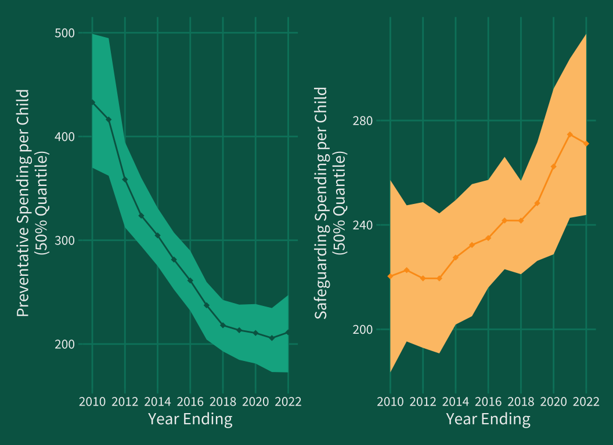
Research Findings
This page provides a summary of the key findings found in the report, as well as some background to the topic and a brief overview of the methods and data used. The full report contains additional detail on methodological justifications, discussion of existing academic literature, and full transcripts of statistical models and other technical details. The three most important findings for policymakers, providers of children’s services, and families are as follows:
Increased spending on preventative and supportive services — including youth work and youth centres, children’s centres, family support, teenage pregnancy and substance misuse services — was reliably associated with decreased rates of children in care and children on child protection plans in English local authorities. The size of the effect implies that, in 2022, there were around 8,300 children in care (around 10% of the care population) who we predict would have been able to be supported to stay with their families of origin had spending on these services remained at 2009-10 levels, when they were just over £200 per child better funded than they were in 2022.
Increased spending on preventative and supportive services was very likely to be cost-neutral or to generate savings in local authority spending. Reducing the costs associated with caring for children who might otherwise live with their families of origin, and improving their mental health and criminal justice outcomes alone would be expected to fund 30p of every £1 spent on any increase each year. The additional benefit of these services reducing child poverty would be expected to result in a further £2.70 of savings for every £1 of spending.
We must be mindful of the inequalities detected in the research to ensure all children benefit equitably. The research suggested that the effect of increasing spending on preventative and supportive services for children and families varied by local authority, over time, and between age, gender, and ethnic groups. However, the evidence suggests that funding more preventative services creates opportunities for addressing over-representation of some populations — especially older children, and children with Black, Mixed/Multiple, or ‘Other’ ethnic heritage — in the children’s social care system.
This research only considered the relationship between spending and rates of intervention. It did not consider other important factors that should be kept in mind when considering this topic, such as the quality of services received by families; the qualitative experiences of families and social workers working in children’s services over this period of time; or the effect of greater spending on the social, emotional, educational outcomes and development of children and young people.
Please cite this summary as: Webb, C. (2024). Investing in Prevention and Support: Spending on family support, children’s centres, young peoples’ services, and other forms of help and child welfare interventions in England, 2009-10 to 2021-22. Final Report. Sheffield, UK: The University of Sheffield. doi: 10.15131/shef.data.26364292
Background
Children’s social care has been described as in crisis in England, with rates of children in care growing from around 61 children per 10,000 children aged 0 to 16 in 2009-10 to 74 per 10,000 in 2021-22, an increase of almost 18,000 children nationally.
There is both a moral and an economic dimension of this crisis. Firstly, we, as a society, should not accept an arrangement where the challenges that families and children face are left to escalate to the point where the only or best option is to place a child in foster care or in a children’s home. From a moral perspective, we should be willing to collectively support families so that their children can flourish, addressing problems as early as possible when they emerge — regardless of the age of the child.
From an economic perspective, the growth in the rates of children in care is unsustainable. Outside of adult social care, children’s social care is often the largest item of local authority spending, contributing to the risk of bankruptcy. At the same time that rates have been increasing, the average spend on services for children in care (children looked after) has increased from around £57,000 per child in 2009-10 to around £75,000 per child in 2021-22. In total, spending on caring for children in England increased from around £3.7billion to £6.1billion.
One potential cause, and suggested remedy, to this crisis has been spending on preventative and supportive services that can stop problems from escalating and meet the needs of children and families before those needs escalate into safeguarding concerns. The 2022 Independent Review of Children’s Social Care argued for a ‘revolution in Family Help’, their term for the same collection of services studied here, and an investment of around £2billion over five years to contribute to a ‘radical reset’ of children’s social care.
An enormous real-terms decline in spending on these services has been well documented. For example, see this article I wrote with Professor Paul Bywaters as part of the Child Welfare Inequalities Project in 2018, or the latest report from the YMCA that documents a 73% cut to local authority youth services.
The exact provision that are included in spending that is referred to throughout this report as preventative services is often somewhat variable, but this study took an inclusive approach for both theoretical and methodological reasons. Briefly, it includes spending on the following examples taken from Section 251 Budget Guidance:
- Sure start children’s centres and other spend on children under 5, including devolved children’s centres.
- Family support services, including, for example, direct payments for special educational needs and disability; short breaks, adaptations, and equipment for disabled children not in care not provided through the NHS or housing service; targeted family support including through the Troubled Families programme (now known as Supporting Families); family community support work; universal family support services such as Home Start.
- Services for young people, including, for example, youth centres/clubs; universal or targeted youth work; services to support young people’s participation in education or training; substance misuse and teenage pregnancy services; targeted support for young people at risk of poor education and employment outcomes; and leisure time activities delivered using youth work approaches including special interest clubs.
- Other children and family services not otherwise included elsewhere in Section 251 categories, which can include examples such as grants to voluntary organisations for activities that do not fall under some other category.
Crucially, excluded from these categories is funding related to:
- Safeguarding children’s services, including local authority social work functions, assessments, child protection investigations, and commissioning; and,
- Children looked after services, including spending on foster care; children’s homes; respite for disabled children in care; leaving care support; and adoption services.
Because the kinds of services offered can be dramatically different, there have been concerns about the comparability of spending on preventative services across local authorities. A 2014 CIPFA report concluded that Section 251 data “are not fit for the purpose either of making valid assessments of total spending on specific areas or of making useful comparisons between local authorities”. Combining all preventative services categories together, as they have the most significant overlap but remain far better differentiated from safeguarding and children looked after spending, alongside the methodology used, makes it possible to eliminate the impact that differences in accounting practice may have on the analysis.
However, it can be helpful context to know, generally speaking, the average proportion of spending on each category and how it has changed before relying on a combined categorisation. As shown in Table 1, spending was predominantly on Sure Start and Under 5 services in 2009-10, with a fairly equal split between Family Support Services and Young Peoples Services across the remainder, with around ten percent of spending falling under the ‘other’ category.
| Category. | Spend £bn (%) 2009-10 |
Spend £bn (%) 2021-22 |
|---|---|---|
| Sure Start & Under 5 | 1.84 (39.8) | 0.51 (20.3) |
| Family Support Services | 1.07 (23.3) | 1.44 (58.1) |
| Young Peoples Services | 1.25 (27.0) | 0.42 (16.8) |
| Other | 0.46 (9.9) | 0.12 (4.8) |
| Total | 4.62 | 2.48 |
When contrasted with 2021-22, Family Support Services is the only category of spending to have seen an increase nationally, likely due to investment in the Troubled Families Programme. Both Sure Start and Under 5 spending and Young Peoples services spending reduced dramatically over the 12 years, with the former spending being decreased by over two thirds and the latter spending being cut by just under two thirds. The change in spending on all of these services as well as changes in safeguarding spending is shown in Figure 1.
However, evidence that demonstrates the efficacy of this kind of spending on child welfare interventions has been limited. As the authors of the Association for Directors of Children’s Services 2014 Safeguarding Pressures report put it, “understanding the prevalence and impact of early help services nationally is difficult”. Most notably, the National Audit Office in 2019 published a report that claimed that reduced spending on Sure Start and Children’s Centres had not reduced rates of child protection plans. This lack of evidence has been influential in policymaking, and runs counter to the logic that investing in preventation and support should reduce rates of intervention.
More recently, evidence that spending on preventative and supportive services reduces child welfare interventions has been mounting, and was summarised in an evidence paper I co-authored with Dr. Davara Bennett, Professor Rick Hood, Professor Paul Bywaters, and the National Children’s Bureau.
What defines the articles presented in this paper is that they utilise a methodological approach that uniquely addresses the difficulty of estimating the effect of spending on child welfare interventions.
Methodology
Data
This research project used Section 251 Outturns as the primary measure of expenditure on children and young peoples’ services. Expenditure was adjusted for inflation using the Service Producer Price Index, with all spending rebased to 2022 prices. Per capita spending was then calculated at the local authority level over time using the Admin-Based Population Estimates dataset created by the Office for National Statistics. These population estimates were used given the significant discrepancy between population estimates from 2010-11 to 2021-22 and the population census data released in 2021-22, which were particularly marked for children and young people.
Rates of child welfare interventions — numbers of children looked after, numbers of child protection plans, and numbers of children in need — were collated from public statistical releases of the Children in Need Census and Children Looked After Statistics (SSDA903) at the local authority level. Data about child poverty were taken from the 2019 Indices of Multiple Deprivation (for use in analyses that spanned from 2009 to 2022), and from the Department for Work and Pension’s children in relative low income families (before housing costs) statistical release for analyses between 2014 and 2022.
Data from 2009-10 to 2021-22 were collated into a single local authority level dataset for analysis. Three local authorities were excluded from the analysis (City of London, Isles of Scilly, and the Isle of Wight) due to their small populations. Missing data at specific time points for some local authorities were imputed using multiple imputation by chained equations. All data sources, tidying, and transformation, is documented in this open access github repository.
Methods
Within-between models
The analysis used within-between regression models in order to identify the effect that changes in spending on preventative and supportive services had on rates of child welfare interventions within local authorities. The aim of a within-between model in this context is to separate the variance in child welfare interventions and spending between local authorities from the variance within local authorities. These can often be quite different. For example, one local authority might have much higher spending than another local authority in general. This would represent differences ‘between’ the local authorities. But one local authority might have much lower spending in some years than their average when compared to another. These represent differences ‘within’ local authorities.
This is important because the relationships between things that differ between local authorities is often different to the relationships between things that differ within local authorities. For example, in this case, the amount that a local authority spends on preventative services compared to other local authorities may actually be determined by their rates of child welfare interventions, rather than the other way around. High-spending local authorities might receive more central government funding due to their greater needs, or low-spending local authorities might have less to spend on prevention because they have high rates of children in care.
However, at the within level, we can explore what happens to intervention rates within a local authority when they spend less or more than their average level of spending in a given year, or when they spent more, or less, than their average level of spending in the previous year. By focusing within local authorities, we can be more confident that the relationship we are measuring is the one we are interested in: the impact that increased or decreased spending relative to what is typical for a given service has on rates of intervention, relative to what is typical for that local authority.
In all analyses, spending on safeguarding (spending related to social work child protection functions) was included as a potential confounder throughout.
Bayesian inference
This research also used Bayesian inference rather than frequentist inference when assessing the ‘significance’ of the findings. It is less typical to see Bayesian social science research, and most people will be more comfortable with the hypothesis tests and “statistical significance” wording used in frequentist research. Rather, in this study, the probability of direction and 89% credible interval based on a Bayesian posterior distribution is used to express the uncertainty in any relationships between variables. The former refers to the probability that the relationship is positive or negative, for example, that increased spending decreases child welfare intervention rates, while the latter represents the range of effects that sit within the central 89% of the posterior distribution, which represents the plausibility of different values.
Indirect effects
The research sought to model a two-year effect of changes in spending on preventative services within an average local authority on rates of child welfare interventions (Children in Need, Child Protection Plans, and Children Looked After). Any plausible indirect effects through prior stages of intervention were also modelled. For example, it was assumed that while spending on preventative and supportive services might impact on rates of children looked after directly, it might also have an indirect effect of reducing the rate of children looked after by simultaneously reducing the numbers of children placed on child protection plans and the numbers of children in need. Failure to model this potential indirect effect would be considered underestimating the impact of this spending.
Another form of indirect effect relates to the impact spending on preventative and supportive services within a local authority might have on child poverty. When considering changes within local authorities there is reasonable justification for the argument that greater investment in preventative and supportive spending can reduce rates of child poverty. The justification for this is that the kind of services funded (outlined above), typically provide families with additional forms of funded childcare, especially for children of secondary school age or older (for example, youth clubs/centres, children’s centres, and grants to voluntary organisations for activities for children and young people). In addition, an explicit aim of many of the family support services offered throughout the period — including Sure Start centres and Troubled Families Programme — was to increase the rate of employment among parents. As such, for analyses between 2014-15 and 2021-22, an indirect effect of spending in this area on child poverty rates is also estimated.
More detail and justifications of these theoretical frameworks is provided in the full report. In addition, all estimates for effects are broken down into their constituent parts so that, for example, only the direct effect of spending on preventative services in isolation from any indirect effects can be reviewed. This may be appropriate if one is skeptical of the indirect effect described above. Incidentally, even under that conservative criteria, increased spending on prevention and support was found to decrease rates of children looked after and children on child protection plans.
Spending decreases child welfare interventions
On average between 2009-10 and 2021-22, each £100 per child increase in spending on preventative and supportive services within an average local authority was associated with a 3.5 per 10,000 reduction in children looked after rates over two years and a 2 per 10,000 decrease in child protection plan rates over two years. This would equate to around 20 fewer children in care and 10 fewer children placed on a child protection plan on any given day of the year in an average sized local authority.
Had spending on preventative and supportive services remained at 2009-10 levels, where it was on average £212 higher per child, we would expect there to be around 8,300 fewer children in care nationally and 4,000 fewer children on child protection plans nationally.
There was no strong evidence that increased preventative spending was related to decreased children in need rates over two-year periods. Increased preventative spending tended to increase children in need rates slightly in the year in which the spending happens, before that spending then results in a decrease in rates of around the same magnitude the following year. As such, children in need rates tended to stabalise over time.
Figure 2 shows the estimated impact that successive cuts to services to support families and children are likely to have had on rates of children in care (per 100,000) between each pair of financial years. For example, the £14.86 per child cut from spending between 2009-10 and 2010-11 is predicted to have increased rates of children in care by around 5.23 per 100,000.
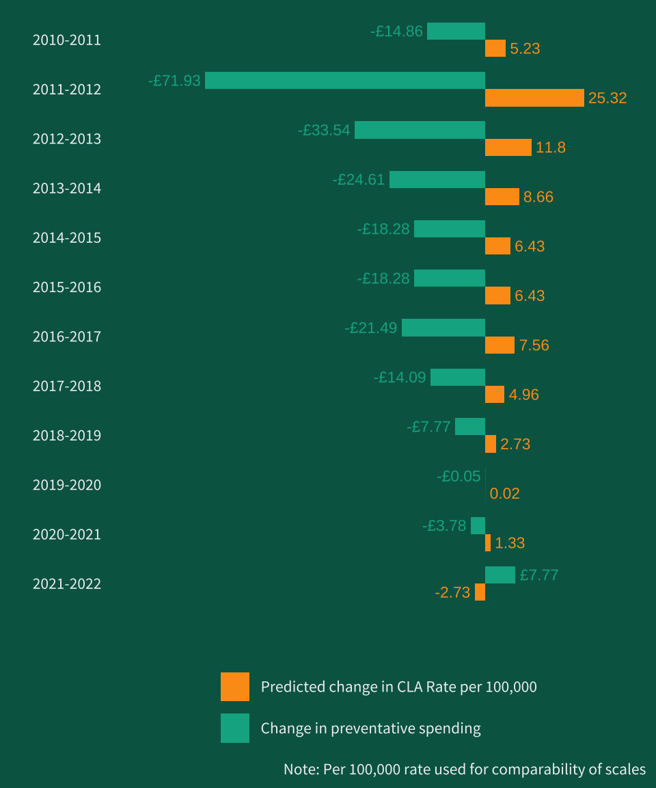
Between 2014-15 and 2021-22, where comparable measures of local authority level child poverty are available, we continue to find that increased spending on preventative and supportive services was reliably associated with decreased rates of children looked after. In fact, the strength of the relationship increases slightly from a predicted 3.52 per 10,000 decrease in children looked after for each £100 spent to a 3.86 per 10,000 decrease.
However, during this more recent time period there was no longer evidence that increased preventative spending was effective for decreasing child protection plan rates or children in need rates. Rather, the evidence seemed to support the idea that increased spending tended to increase these rates.
This suggests that while increased spending since 2014-15 is still very likely to be effective for reducing rates of children in care, there is not sufficient resource or types of services available to address the kinds of needs or perceived risks that might result in families receiving some other form of social work intervention. This is consistent with recent qualitative studies which suggest that services have had to become more and more targeted and rationed as funding has decreased.
Analysing this time period also reiterates how strong the relationship between child poverty and rates of child welfare interventions is. Figure 3 shows the impact that changes in child poverty and changes in preventative services are predicted to have had on children looked after rates in an average local authority.
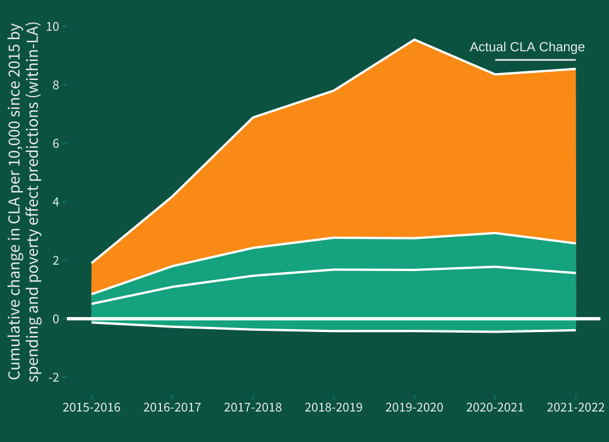
More than two thirds of an average local authority’s predicted increase in children looked after rates could be attributed to increases in child poverty, around 6 of the 8.5 per 10,000 predicted increase.
Just under one third of the average local authority increase could be attributed to changes in spending during this period. However, it should be noted that a very large proportion of all cuts to preventative and supportive services occurred prior to 2014-15, as was shown in Figure 2.
Of these cuts to preventative services, around 60% of their impact on children looked after rates was related to their capacity to prevent child poverty.
Spending is likely to be cost-neutral or to save money
The ‘costs’ associated with children being looked after are notoriously difficult to estimate, and the moral and human costs of not supporting families to be able to remain together safely should outweigh any economic costs. Further, we must be cautious not to oversimplify the often unpredictable ways that services might respond to increased funding, especially where thresholds are currently operating at very high levels in order to cope with demand. However, the fiscal sustainability of investing in preventative services is nevertheless an important aspect of policy.
The average cost associated with caring for a child in care in 2021-22 was £77,205 per year, meaning the costs associated with the additional 8,300 children in care than would be expected had spending remained at 2009-10 levels would be £640million.
In addition, reducing the high rates of criminal justice contact among children in care and improving mental health outcomes would be expected to be associated with a further £40.5million and £31.5million of savings respectively, not to mention the improved life chances for these children.
It is difficult to estimate the costs associated with children placed on child protection plans, but adjusting cost calculator unit cost estimates by Holmes, et al. (2010) for inflation, including an average of 6 months of ongoing support, would imply a cost of £14.3million annually from child protection processes alone. This is a conservative estimate as it does not account for any improved educational, health, or other outcomes that these children may have.
This indicative value-for-money estimate suggests that just over 30 percent of the costs associated with investing in preventative and supportive children’s services would be returned in the very short term by reductions in costs associated with direct outcomes.
Looking beyond the short-term, immediate outcomes suggests that investment in these services would very likely result in net savings for public services.
For example, we would expect the impact of restoring spending on preventative and supportive child and family services to 2009-10 levels to also lift around 365,000 children out of poverty. If we consider the recent estimates of the cost of child poverty produced by the Child Poverty Action Group, we would expect this reduction in child poverty to result in a £6.43billion per year worth of gains. This would mean that, taken together with the immediate direct costs related to children in care or on child protection plans, around £3 of spending would be expected to be returned for each £1 spent on preventative services.
These are conservative estimates across only a small, limited, number of predicted outcomes which suggest that investing in prevention is very likely to be cost-neutral or to save money.
Increased prevention gives safeguarding services alternatives to care
The study also considered the way that preventative services and safeguarding services interact. Specifically, the research explored whether increased investment in safeguarding services — largely child protection social work — resulted in more children being taken into care when preventative and supportive services were less well-funded.
In the absence of support services to refer or signpost families to, there is a risk that an environment is created where social workers have few options other than child protection investigation and children’s social care to manage the risks that children face. As such, underfunding of prevention and support while maintaining or increasing child protection social work spending to meet may create an environment where rates of children entering care grow rapidly.
There was evidence that this was the case: in years where local authorities’ spending on preventative services was higher, increased spending on safeguarding services was less likely to be linked to increased rates of children in care than in years where spending on preventative services was lower. Figure 4 visualises this relationship across five levels of spending on preventative services: very low (£200 per child below the average for the local authority); low (£100 per child below the average for the local authority); average; high (£100 per child above the average for the local authority); and very high (£200 per child above the average for the local authority), relatively speaking.
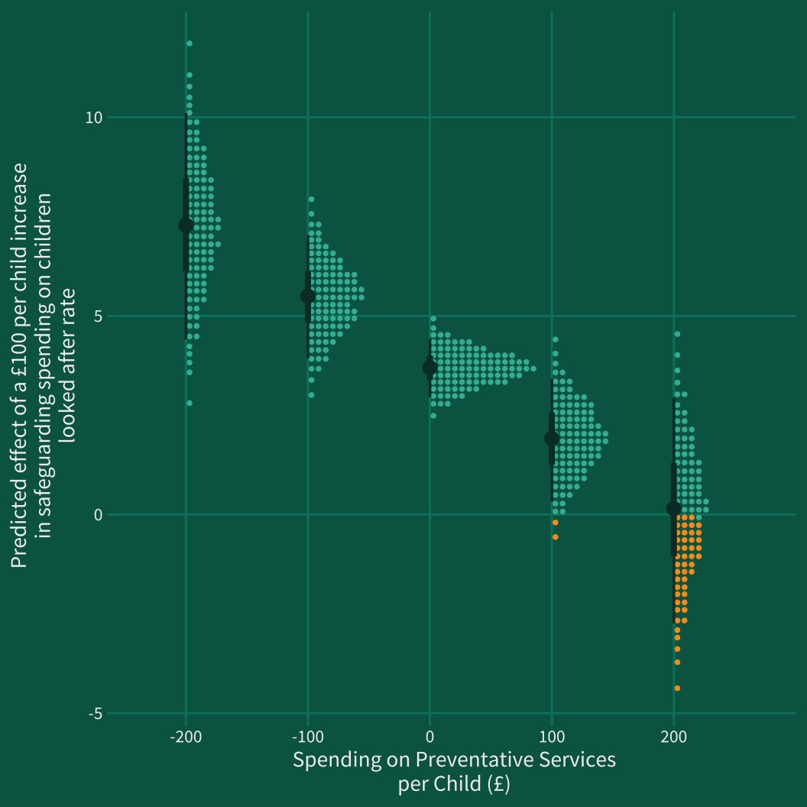
When spending on preventative services is very low within a local authority, we would expect to see each additional £100 per child in spending on safeguarding services above the average result in between 4.5 to 10 additional children in care.
By contrast, in years where spending on preventative services was around £200 per child higher than the average, we wouldn’t expect an increase in safeguarding services spending to result in any reliable increase or decrease in the numbers of children in care in that year.
This finding suggests that adequate investment in preventative and supportive services can help social workers find ways to help families remain together safely by utilising the community support available and that resolving the ‘care crisis’ cannot be achieved through investing in child protection social work alone. Investment in preventative and supportive services and wider structural issues, namely child poverty, are needed.
The effect of spending has changed over time
While the effect of higher preventative spending within local authorities was to lower rates of most child welfare interventions on average over the entire period studied, there was considerable variation in this effect depending on the pair of years analysed. The types of preventative and supportive services provided for families have undergone significant transformation since 2009-10.
In particular, we can consider the overall affect that austerity has had on the coverage of services, where services are often rationed to those determined to be most in need. But we can also consider the influence of certain landmark reviews and reports such as the Field Review and the Allen Reports, which directed more attention towards intervention at earlier ages (i.e. in the first 1,000 days).
We can also consider the role of flagship policies of the coalition and Conservative governments such as the Troubled Families Programme, which emphasised direct casework with individual families rather than community provision. The epistemological landscape also changed dramatically over the period, with significant investment in ‘What Works’ centres that aimed to improve social interventions through evaluation and, often, assessing the extent to which studies providing evidence for or against interventions met causal criteria.
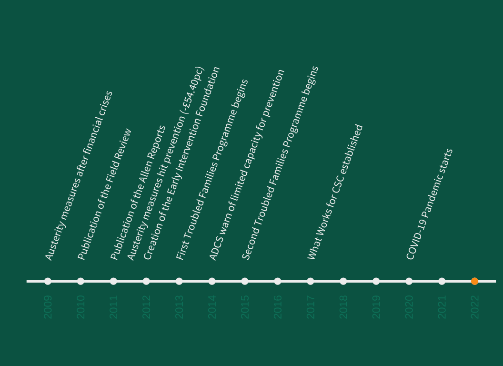
The collective impact of these policy changes is that preventative and supportive interventions that targeted younger children, which could be evaluated using randomised controlled trials, and that targeted more complex or challenging needs at the individual or household unit rather than at the community level, increased in status over the 2010 decade.
Figure 6 illustrates that varying effect that increased spending on preventative and supportive spending is predicted to have had depending on the point in time since 2009-10 that is observed. More gold points on each distribution indicate greater credibility for the idea that investment decreased that form of intervention, which a greater prevalence of turquoise points in the distribution indicates more credibility for the idea that investment increased that form of intervention.
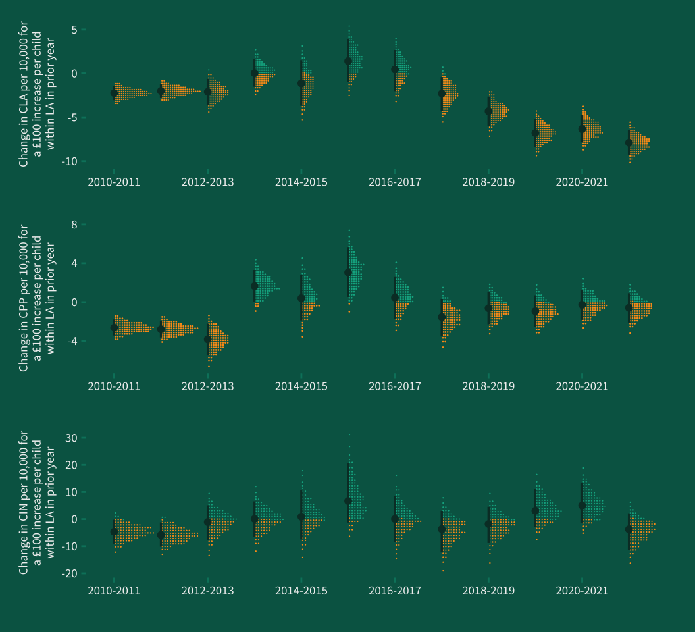
It is notable that the only two pairs of years where we can be very confident that increased investment was decrease rates of all three forms of intervention — children in care, children on child protection plans, and children in need — are found before 2012-13. In addition, the clustering of the posterior distribution for the pairs of years 2009-10 to 2010-11 and 2010-11 to 2011-12 indicates that the beneficial effect of investment was more uniform — less variable — across local authorities.
We also see a prolonged period of relative ‘ineffectiveness’ between 2011-12 and 2012-13 through to 2015-16 to 2016-17, where the effect of investment is either not reliably positive or negative but in some instances tended to be more consistent with increased rates of intervention. Coincidentally, this period of time dominates the data that made up the National Audit Office’s evaluation of the effects of spending in 2019.
However, since 2017-18, we see continual improvements in the effectiveness of spending for reducing rates of children looked after, to the point at which, by 2020-21 to 2021-22, each £100 per child increase in spending on preventative and supportive services was associated with an average decrease of 7.9 per 10,000 in children looked after rate — almost four times the size of the average lagged effect for the entire period when averaged over.
In some regards, the data indicates that there has never been a better time to invest in preventative and supportive services if the intention is to reduce the rates of children in care. However, we must be mindful of the fact that these services appear to be doing less to reduce earlier forms of intervention such as child protection plans and children in need rates, and that local authorities have become more variable in the effectiveness of their provision.
The effect of spending also varies across England
Another question this research sought to consider is whether the relationship between spending on preventative services and rates of intervention differed depending on the local authority. This was found to be the case. While in the majority of local authorities we would expect increased spending to be associated with decreases in children looked after (77% of local authorities) and child protection plan (85.4% of local authorities) rates, in some local authorities increased spending was more likely to be associated with increased intervention rates.
Children and their families should be able to expect to be supported to the same extent, no matter where in the country they are, to live safely at home.
This variation for children looked after rates is shown in figure 7. Around 31% of local authorities had an expected decrease in children looked after for an investment in preventative and supportive services that was at least twice the magnitude of the median expected decrease across all local authorities in England.
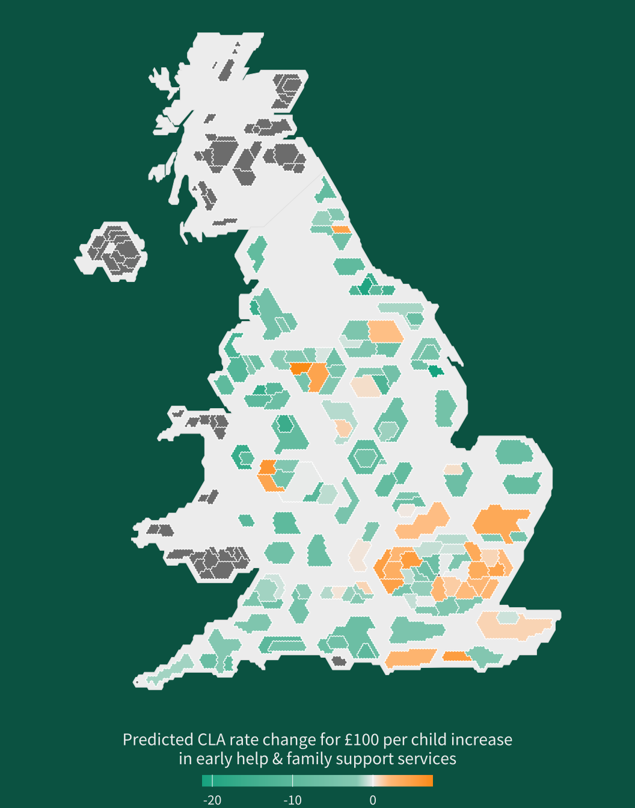
In some local authorities a cut of £100 per child in preventative spending might be associated with as much as a 15 or 20 per 10,000 increase in children looked after rate, in others a cut of this magnitude might be associated with no reliably positive or negative change. In addition, some local authorities seemed to have far more consistent outcomes related to children looked after and other rates than others, shown by the width of the yellow bars for each authority in figure 8 for children looked after rate. Equivalent plots for child protection plan and children in need rate effects are provided in the full report.
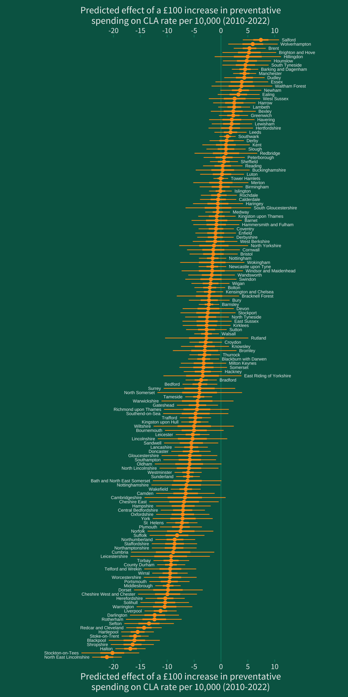
However, we should not be reductive by claiming that some local authorities are spending money ‘ineffectively’ or counter-productively. Many local authorities that had a negative relationship between spending on preventative services and rates of children looked after might have a positive relationship between child protection plan rates and spending on preventative services, and vice versa.
There was also little indication of structural explanations for the variation in spending effects. The effect of spending did not seem to be related to the level of poverty in the local authority, but there was some evidence to suggest that local authorities that had kept their spending closer to 2009-10 levels had spending that was more effective for reducing children looked after rates, on average. There was also some evidence that local authorities that spent more on preventative services as a whole also had more effective spending per pound for reducing children in need rates.
Rather than diminishing returns, spending tended to become more effective the more that was spent when considering child in need rates.
Very few local authorities had spending that appeared to simultaneously decrease all of children in need, child protection plan, and children looked after rates by equivalent amounts. In these cases, variation may indicate the points in a typical progression through child welfare interventions where that local authority’s preventative and supportive services are best placed to address perceived risks.
Less influential spending may also indicate greater resilience to the negative impacts of the cuts to service funding that many other local authorities have faced over the decade. Further, the relationship between spending and rates of intervention tells us nothing about the quality of the service delivered: the extent to which families feel heard and empowered; the impact of those services on the outcomes that families care about but which are not routinely measured; and so on.
Rather, this variation should be considered a helpful tool for further investigation into the ways in which services might achieve broader aims of reducing rates of intervention that can be integrated with other forms of good practice.
The relationship between spending and care rates is unequal across age, gender, and ethnic populations
As was the case with geography, it is also crucial to understand how the effects of spending may differ depending on the demographic characteristics of the child population. Ethnic inequalities in particular in the children’s social care system have become an increasingly important concern, with children from Black and Mixed Heritage backgrounds often overrepresented in the care system. Older children, too, make up an increasing proportion of the population of children in care. The proportion of all children in care who are aged 16 and older in care has grown from a three-year average of 21.8% between 2010-11 and 2012-13 to a three-year average of 25.5% between 2019-20 and 2021-22. During this latter period the median duration of time in care grew by only 10 to 20 days.
Understanding the role that spending on preventative and supportive services might have on rates of care across different child populations can assist us in understanding the role that cuts to services might have had in reproducing or exacerbating inequalities in child welfare interventions, and may also help us understand how policies to reinvest in and expand the provision of preventative and supportive services can help us identify ways to ensure the effects of funding are equitable and actively work to reduce unjust inequalities in rates of intervention.
Figure 9 presents an overview of some of the most prominent differences across child populations in the predicted effects of increased spending on preventative and supportive services. Increased spending tended to have the most beneficial effects for children aged over 16 and between the ages of 10 and 15, which may help explain growth in rates of care among these populations since 2010-11. Conversely, increased spending tended to be associated with increased rates of children aged 1 to 4 or 5 to 9 in care, suggesting that these services increase service awareness of potential risks at home without perhaps being equipped or able to deliver the kinds of support that might mitigate these perceived risks.
Rates of care among male child populations also seemed to be more strongly associated with changes in spending than rates of care among female children.
While children from all ethnic backgrounds were negatively affected by cuts to spending on preventative services, the most prominent effects are found among the Black, Asian, and Mixed Heritage child populations (as well as children with ‘Other’ ethnic heritage, discussed later) with more muted, but still substantial, effects identified among the White/White British child population.
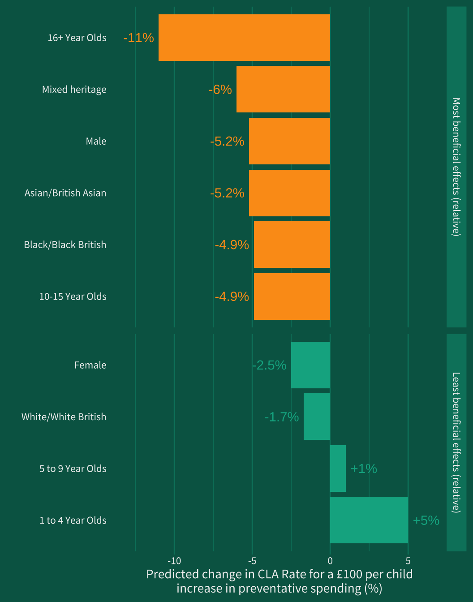
While these inequalities are important, we should also be mindful that they do not consider the role that intersectionality might play. That is, the importance of preventative services spending for Black boys who are aged 16 and over may be different to what we might assume from treating age, gender, and ethnicity as separate, ‘additive’, facets of a child’s identity. Further research with more granular data is needed to explore such intersectional differences.
The following sections consider each demographic population in turn, highlighting also how the predicted effects appeared to be mediated by rates of child poverty.
Age
Between 2009-10 and 2021-22, spending on preventative services was found to benefit children who were one year old, children who were aged between 10 and 15, and children who were aged 16 years and over. Strong evidence of a beneficial effect was also found after removing any mediating effect via reductions in child poverty when analysing the data from 2014-15 to 2021-22 for all age groups other than 5 to 9 year olds, suggesting that for all other age groups increased spending on preventative services reduced rates of children in care above and beyond the impact they have on rates of child poverty.
These findings also showed that increased in child poverty had the greatest impact on rates of children in care among 1 to 4 year olds, with each 1 percentage point increase in child poverty within a local authority being associated with a 4.1% increase in rates of 1 to 4 year olds in care. Following this, children aged under 1 were most affected, with a 2.5% increase in care rates expected for a 1 percentage point increase in child poverty, then 5 to 9 year olds (+1.2%), children aged 16 and over (+1.1%), and lastly, children aged 10 to 15 (+0.4%).
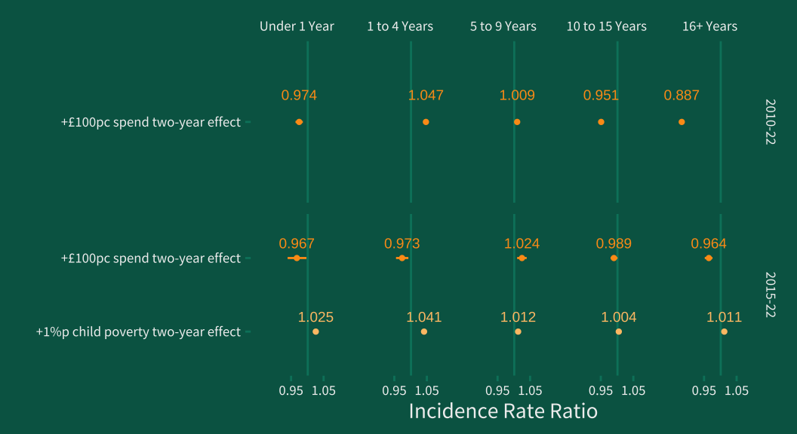
These models measure relative (percentage) expected changes in rates of children in care due to the very different sized populations across local authorities, but approximate effects in terms of change per 10,000 can be estimated using average marginal effects. These represent the expected change in children in care per 10,000 for a statistically average local authority.
For children aged 16 and older a 11.3% increase in children looked after rate would be equivalent to around a 17 per 10,000 increase in numbers of children in care per £100 spent per child. At an average reduction of £212 per child in spending when compared to 2009-10, we’d expect this to equate to just under 4,700 children nationally. For 10 to 15 year olds, we would expect a 4.9% increase in rates of care to equate to around a 4 per 10,000 increase in non-relative terms, which means we would expect around 3,500 more children of this age group in care in 2021-22 than if spending had remained at 2009-10 levels.
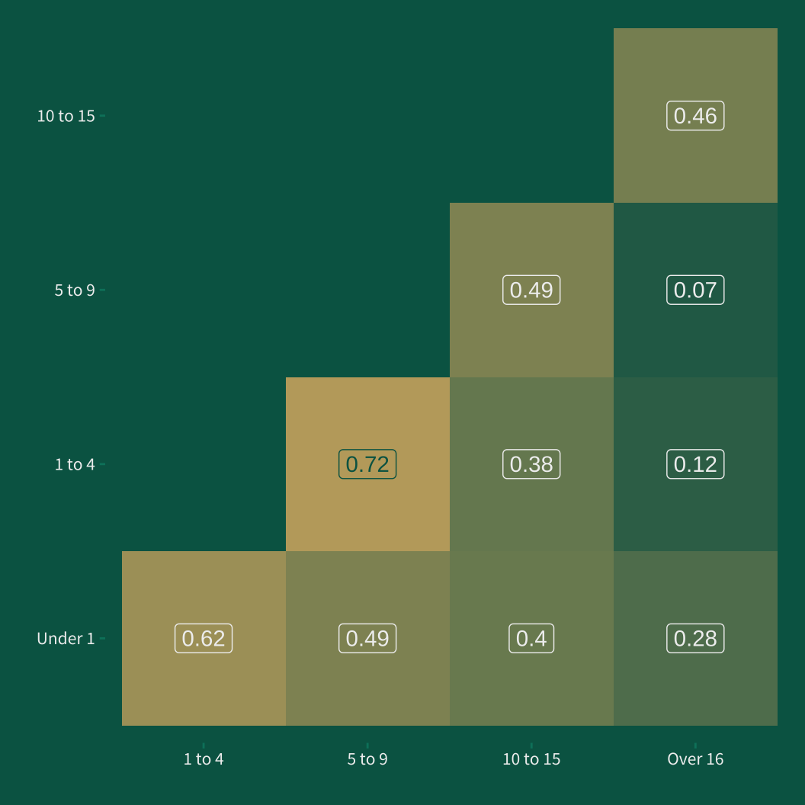
Another insight from this analysis was that the effects across age populations within different local authorities were not especially highly correlated (Figure 11). The effects of spending for very young children were fairly strongly correlated (R = 0.62), but there was very weak correlation between the effects of spending on rates of children in care aged over 16’s and the effects of spending on younger children’s rates of care, especially 1 to 4 and 5 to 9 year olds.
This implies that local authorities’ preventative and supportive services rarely offered equivalent support with regards to preventing entry into care across all age groups, and that children of some ages were more likely to be supported than children of other ages depending on the local authority.
Gender
There was strong evidence that spending on preventative services was effective for reducing rates of care for children regardless of their gender, though spending had a somewhat stronger effect on boys rates of care than girls. In addition, after accounting for the mediating effect of child poverty, spending continued to have a substantial additional effect on boys’ rates of care while there was no evidence of an additional direct effect on girls’ rates of care.
This may be partially due to the fact that the data suggested that increases in child poverty had a more pronounced association with girls’ rates of care than it did with boys’ rates of care.
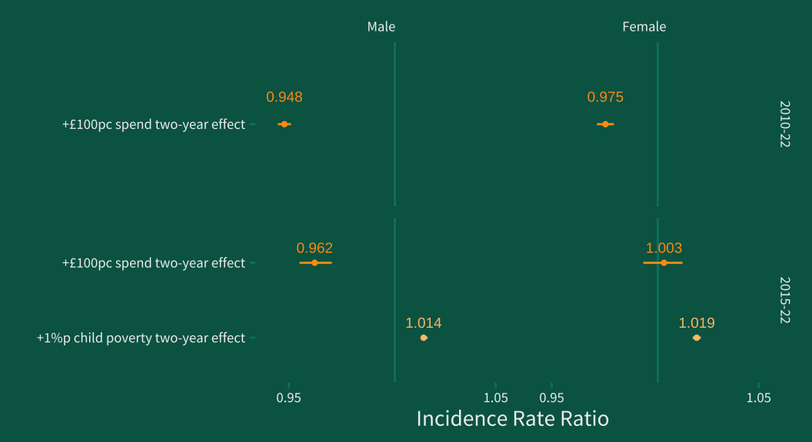
The effectiveness of spending for reducing rates of care for boys and girls within the same local authorities were quite strongly correlated (R=0.793), which indicates that local authorities with effective spending for reducing rates of care among male children also tend to have effective spending for reducing rates of care among female children, and vice versa.
Ethnicity
The study found very substantial differences in the predicted effect of changes in spending on preventative services on rates of children in care across different ethnic groups. Some caution is suggested in the interpretation of these results due to the amount of censored data due to small numbers. For example, 41.5% of data for Ethnic Minority: Other children in care numbers was censored due to small counts, as was 32.2% of data for Asian children looked after and 27.3% of data for Black children. These missing data have been imputed using current best practice, and more information is provided regarding multiple imputation in the full report. In addition, the analysis was limited by the ‘5 group’ ONS classification of ethnicity, which can obscure differences between, for example, Black children with African Heritage and Black children with Carribean heritage, or between Asian children with Indian heritage when compared to Asian children with Pakistani or Bangladeshi heritage. While some estimates may lack some precision, the magnitude of the differences observed are unlikely to have been caused as a consequence of the missing data when treated in this way.
All ethnic minority child populations had stronger associations between preventative and supportive spending and children looked after rates than the White British population, but all groups of children were predicted to have see decreases in rates of care if spending on preventative services were increased. The effect of increased spending was especially prominent (-21.5%) for children from ‘other’ ethnic groups. Following this, children with mixed heritage were predicted to benefit most from increased spending in preventative services (-6%), then children with Asian (-5.2%) or Black heritage (-4.9%). Children in the White/White British population saw a smaller, but highly reliable, reduction of 1.7% per £100 per child spent on preventative services.
One paradoxical finding, however, was that there appeared to be no direct additional beneficial effects of spending for all ethnic minority populations except for children with ‘other’ ethnic heritage once the mediating effect of poverty was included in the model. This suggests that the positive effects of increased spending on preventative services for these minority populations has been tied to the extent to which these services can affect child poverty.
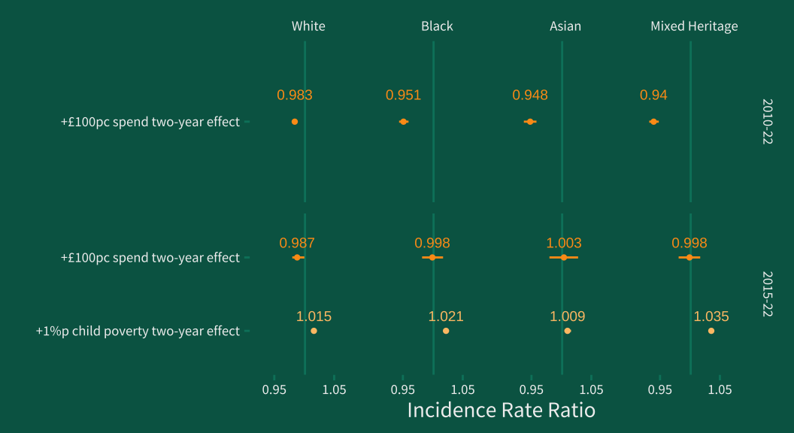
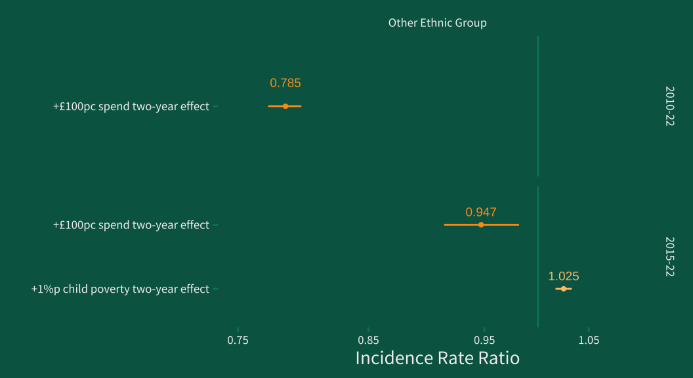
In addition, increases in child poverty within local authorities over time have had a larger impact on rates of Black, Mixed Heritage, and ‘Other’ children in care than they have on rates of White or Asian children in care. A one percentage point increase in child poverty within a local authority was associated with a 1.5% increase in the rate of White children in care, and a 0.9% increase in the rate of Asian children in care, but a 2.1% increase in the rate of Black children in care, a 2.5% increase in the rate of ‘other ethnic group’ children in care, and a 3.5% increase in the rate of Mixed Heritage children in care.
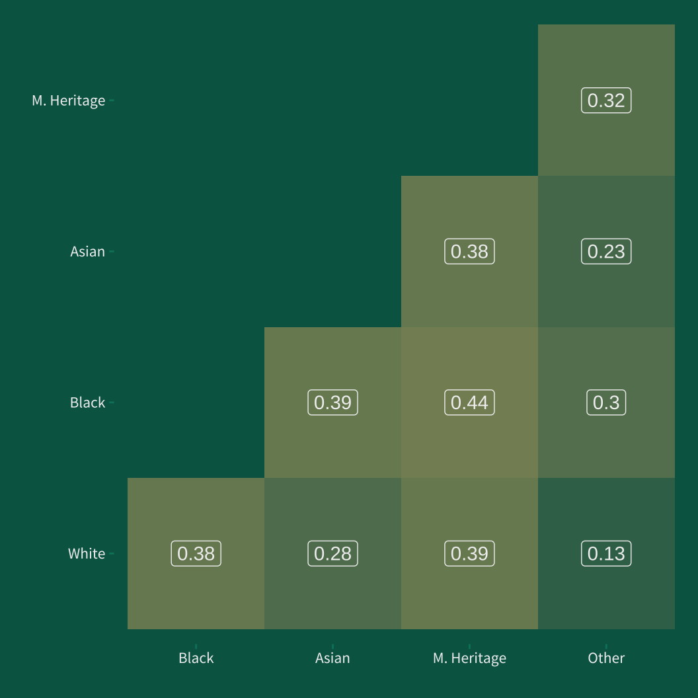
There was a concerning lack of correlation across the effects of spending on rates of children in care within local authorities across the five ethnic groups. This essentially means that the services that local authorities offer to support children and families rarely benefit all ethnic populations within the local authority equitably. This may be due to the location and distribution of services, the accessibility of services, or the provision of funding to support services at a local level, and warrants further investigation.
Conclusions
Since 2009-10 spending on preventative and supportive services for children and their families has been reduced almost every year on average until 2021-22. The full extent of the impact that this has had on the growing numbers of children in care has not, before this study, been comprehensively established. This research project found that there was a substantial and highly credible link between variation in spending on preventative services within local authorities over time, and their rates of children in care. Around 10% of the children in care in England on any given day might still be living safely with their families of origin had preventative services spending been protected at 2009-10 levels.
This study also reasserts the prominent impact that child poverty has on rates of children in care or placed on child protection plans. The evidence that policies that address both poverty and the availability of universal and preventative support continues to grow. Together, this project and the Child Welfare Inequalities Project, have demonstrated that building a socially just environment where all children and families are supported to flourish is the best and fairest way to address the unsustainable crisis in children’s social care.
Such foundations create the conditions for alternative outcomes to the care system when child protection investigations are necessary, and are likely to lead to net economic benefits, as well as numerous intangible social and moral benefits.
Cuts to preventative and supportive services have most negatively affected minoritised child populations. They have also disproportionately affected older children, who have often found that their needs are sidelined so that services and interventions for very young children can be maintained or expanded.
However, this also means that reinvesting and expanding investment in preventative and supportive services can help address the care crisis while also making the child welfare system more equitable. Rather than asking whether we can afford to invest in support for families and children, we should be asking whether we can afford not to.